Next: Calculation Up: Fortran: Module Interface time Previous: First-order Contents
INTERFACE:
subroutine emp_2(dt,numc,nlev,cc,right_hand_side)DESCRIPTION:
Here, the second-order Extended Modified Patankar scheme for biogeochemical models is coded, with two evaluations of the right-hand side per time step:
| 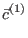 | 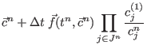 | ||
| 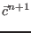 | 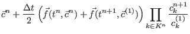 | (256) |
where
| 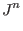 | 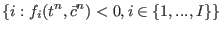 | ||
| 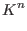 | 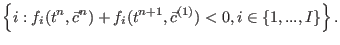 | (257) |
The first step is identical to a step with the first-order EMP scheme. The second step mathmatically identical to a step with the first-order scheme if we rewrite it as
| 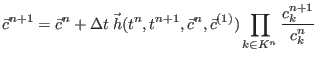 | |||
| with 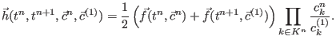 | (258) | ||
Therefore, this scheme can be implemented as two consecutive steps with the first-order scheme, the second using 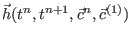. The non-linear problem of each consecutive step is solved in auxiliary subroutine findp_bisection.
For more details, see Bruggeman et al. (2006).
USES:
IMPLICIT NONEINPUT PARAMETERS:
REALTYPE, intent(in) :: dt
integer, intent(in) :: numc,nlev
!INPUT/OUTPUT PARAMETER:
REALTYPE, intent(inout) :: cc(1:numc,0:nlev)
interface
subroutine right_hand_side(first,numc,nlev,cc,rhs)
logical, intent(in) :: first
integer, intent(in) :: numc,nlev
REALTYPE, intent(in) :: cc(1:numc,0:nlev)
REALTYPE, intent(out) :: rhs(1:numc,0:nlev)
end
end interface
REVISION HISTORY:
Original author(s): Jorn BruggemanLOCAL VARIABLES:
logical :: first integer :: i,ci REALTYPE :: pi, rhs(1:numc,0:nlev), cc_med(1:numc,0:nlev), rhs_med(1:numc,0:nlev)
Karsten Bolding 2012-01-24